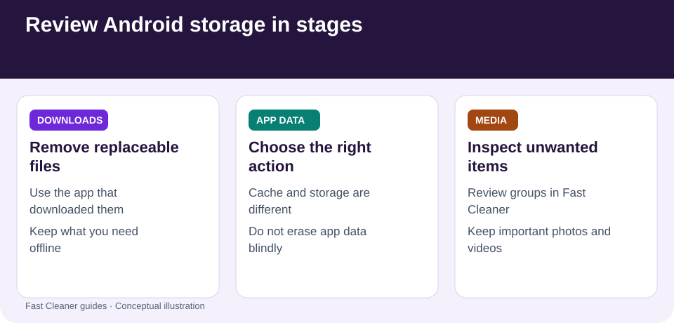

Can free Fast Cleaner help clear Android storage while I keep important photos?
Fast Cleaner for Android is free and helps you review duplicate and similar photos, screenshots and large videos. Keep important media and start with other removable categories when you do not want to delete photos. A cleaner cannot create extra physical storage.
To free up Android storage without deleting important photos, start with downloaded media and unused apps, then review how your photo copies are stored. Decide what must remain on the phone before choosing an archive or local-cleanup action.
Preserving a memory does not always require keeping every copy on the device. But you need a verified alternative and a plan for offline access before removing the local version.
- Use the device’s storage categories to choose what to review first.
- Clearing an app’s cache is different from clearing its storage or data.
- Verify backups and offline needs before removing device photo copies.
Start with Settings, not a deletion target
Open your device’s Settings → Storage, or search Settings for Storage. Manufacturer layouts vary. Note the largest categories and check whether apps, video downloads, or photos are actually responsible.
Google’s Android storage guide provides category-review and cleanup options. Use your own breakdown to decide which option deserves attention first.
If a large game or offline-video collection dominates the screen, beginning with family photos may be unnecessary. A quick inventory can protect the files you value by directing effort elsewhere.
Review things you can download again
Open the apps you use for films, podcasts, music, and offline maps. Look for downloads you no longer need on the phone and remove them through the relevant app’s controls.
Check that a file is genuinely replaceable. A streaming download tied to your account is different from a unique recording someone sent you, even when both appear in a media category.
Also inspect your Downloads folder for old installers, duplicate documents, and exports. Open unfamiliar files before deleting them; a cryptic filename does not tell you whether it matters.
Review unused apps and their data
Look at large apps you rarely use and consider uninstalling or using an available archiving option. Before removal, check whether important work, game progress, or downloaded content is stored only inside that app.
Google distinguishes clear cache, which removes temporary data, from clear storage, which permanently deletes an app’s data. Do not treat similarly placed buttons as equivalent actions.
Prefer reviewing content inside the app when possible. Clearing a whole app’s storage to recover a small amount of room can create a bigger restoration job than the original storage problem.
Keep memories with a verified copy strategy
If you use Google Photos, verify the intended account and backup status before considering local-copy removal. Google’s Free up space guide explains the feature for backed-up media.
Plan what you need without an internet connection. A cloud-visible photo is not necessarily an available local file. For important records and travel media, confirm that your access plan works in the conditions where you will use it.
A separate computer or drive can be another archive option. Copy a manageable batch, open the destination files, and check that you can find them before removing originals from the phone. An unverified transfer is not the same as a usable archive.
Review unwanted media rather than valuable memories
Keep important photos and look for accidental screenshots, repeated saves, or recordings you never intended to keep. Compare similar images carefully: different expressions or document details can justify retaining more than one.
For a large video you want to share, a compressed copy may be useful. Preserve the original until you have checked the output’s playback, detail, and sound. The result depends on the file and chosen settings.
Fast Cleaner can help organize duplicate and similar-photo review, screenshot cleanup, and large-video review. Use the features available on your Android device and confirm selections before cleanup.
Check the result and make a smaller routine
Return to the same storage screen after each sensible batch. Try the task that failed, such as downloading an update or saving a recording. That tells you whether the work solved the immediate problem.
If space fills again quickly, identify the recurring source: new camera videos, offline entertainment, message media, or app data. Address that habit rather than repeating a full-library purge.
A short review after a trip or a large download can be easier to maintain than an emergency cleanup. Keep the routine focused on unwanted files and verified copies, rather than a fixed number of photos to delete.
You can also download  Fast Cleaner: AI Photo Clean. Review the features available on your platform and any pricing before choosing an app.
Fast Cleaner: AI Photo Clean. Review the features available on your platform and any pricing before choosing an app.
Your review checklist
Mark each point after you have considered it. This worksheet records your review; it does not inspect your device.
You have reviewed each point. Proceed only with the changes you understand and want to make.
Your selections stay in this page’s memory, are not submitted, and reset when you reload.
Common questions
Will buying cloud storage increase my phone’s capacity?
It does not change the hardware capacity. You still need to decide which local copies and downloads remain on the device.
Is clearing cache the same as deleting app data?
No. Google distinguishes temporary cache from app storage/data. Read the confirmation and check important app-specific content before proceeding.
Do I need a cleaner app?
No. Begin with system settings and the controls in your apps. A separate cleaner is an optional way to organize media review.
Android cleanup choices before deleting important photos
| Choice | What it addresses | Keep in mind |
|---|---|---|
| Remove offline downloads | Movies, music or files you can obtain again. | Remove them through the responsible app. |
| Clear an app’s cache | Temporary app data. | Clear storage is a different, more destructive operation. |
| Google Photos Free up space | Backed-up device copies. | Removed copies will not be available offline. |
| Fast Cleaner review | Unwanted duplicate/similar photos and large videos. | Keep important originals and review the selection. |
Google’s wording:
Deletes temporary data.
Google describes Clear cache this way. Its guide distinguishes this from Clear storage, which deletes app data.
Platform source: Google — Free up storage on your Android device, checked November 21, 2026.

Where Fast Cleaner fits
Find the free Android app on Google Play as Duplicate Photo Cleaner AI by CrocApps. Use it to identify media you genuinely no longer need; it is not a tool for adding RAM or accessing another app’s private storage.
Fast Cleaner’s privacy policy describes on-device media analysis with separate limited analytics. Compare Android and iPhone pricing.
Continue with Where does Fast Cleaner fit in an iPhone storage cleanup?.
Official platform references are linked beside the relevant claims. Menu labels and available features vary by software version and device. Examples are illustrative; this guide does not claim a measured cleanup result or an endorsement by Apple or Google.